Los Peces
Los peces son vertebrados acuáticos, normalmente de sangre fría, que respiran a través de las branquias y nadan gracias a sus aletas. Pueden ser de agua dulce o salada (salobre) y vivir tanto en ríos, mares, lagos, océanos y en toda la diversidad de climas.
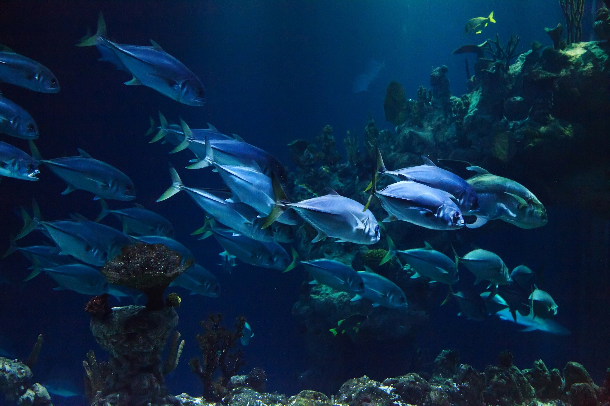Los peces constituyen el grupo más grande de los vertebrados, ya que representan casi la mitad de las especies. Existen más de 20.000 especies de peces, de las que el 40% vive en agua dulce y el resto en los mares. Solo algunas especies como los salmónidos, las anguilas o los acipenséridos son capaces de pasar de un medio a otro.
Por norma general, los peces más grandes van a encontrarse en aguas mucho más profundas, en un nivel medio, sin llegar a tocar la superficie, pero tampoco escondiéndose en las profundidades. Los peces que están en las profundidades, con al menos más de 3000 metros, son los que se consideran más cercanos a la época prehistórica, puesto que tienen un aspecto muy similar a la que existieron, mientras que los que están cerca de la costa o de la superficie son más evolucionados.
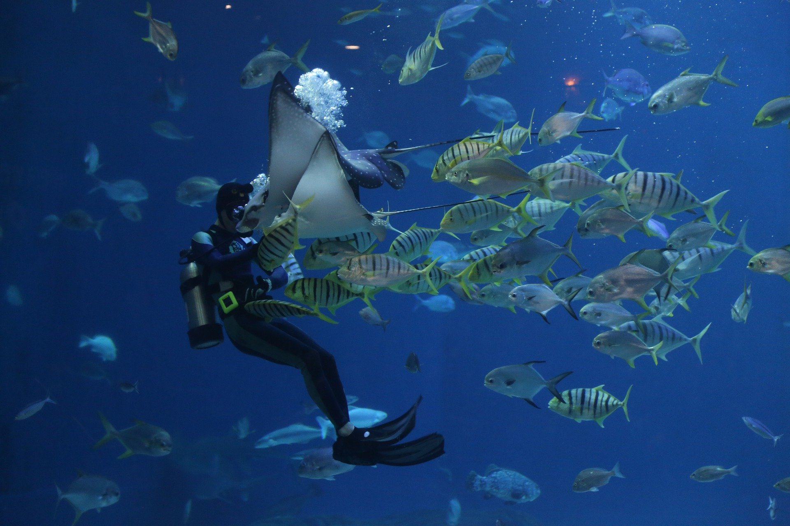El gran cazador de los océanos
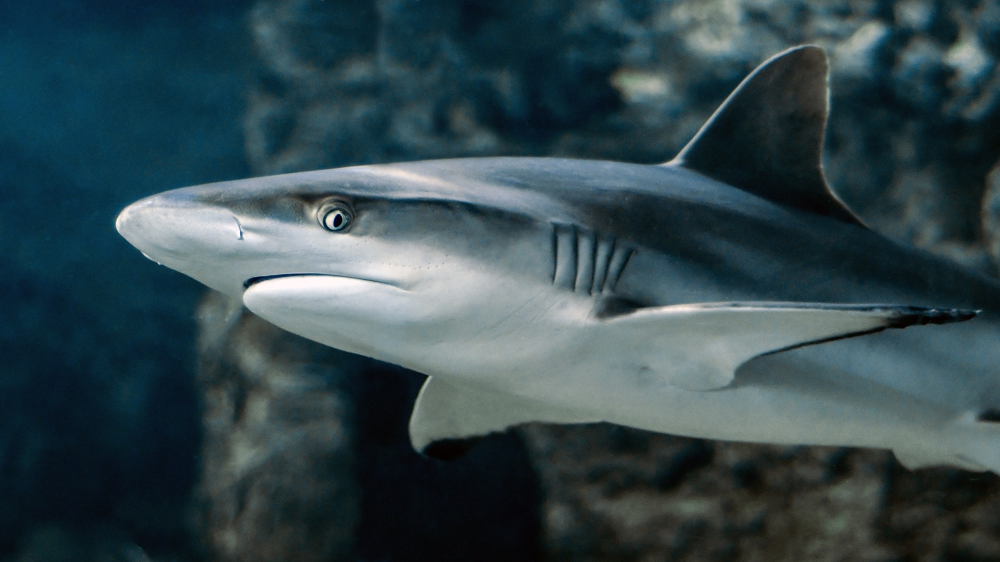Supongamos que vas un dia de excursión al océano quizás a bucear o solo disfrutar la vida en un yate alquilado. ¿Cuál sería el principal peligro que te viene a la mente? Quizás sea que no sepas nadar, quizás a quedarte varado en medio del océano o quizá a sufrir quemaduras por el sol y sin lugar a dudas muchos le tendrán miedo a ser comidos por un tiburón. La realidad es que los tiburones no tienen preferencia por los humanos. La gran mayoría de los ataques se producen a causa de que los tiburones confunden a surfistas con tortugas marinas, las cuales son su comida favorita.
Los tiburones pertenecen al grupo de los peces cartilaginosos (Chondrichthyes) junto con las rayas y las quimeras. También pueden ser llamados “Condrictíes”, “Condrictios” o “Elasmobranquios”. Se trata de vertebrados acuáticos, que respiran a través de branquias y nadan gracias a las aletas que tienen. Se trata de un animal muy temido por su gran voracidad. Como norma general suele medir unos 8 m y tiene la boca, arqueada, con varias filas de dientes afilados.

Durante aproximadamente 400 millones de años, los tiburones han ido evolucionando. Esto les ha permitido ir adoptando diferentes formas y tamaños, creando nuevos órganos, desarrollando sus sentidos, etc. Este proceso evolutivo tiene su resultado en la diversidad de especies que existen, hoy en día 368 especies de tiburones reconocidas.
Un simbolo de fortuna
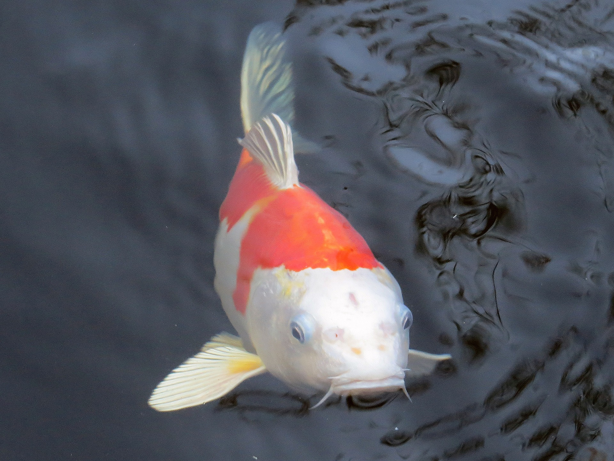El grandioso koi es un pez de colores muy atrayentes originario de Japón y China. También se le llama carpa, ya que proviene de la familia de peces Carpa. Llega a alcanzar un tamaño de unos 50 a casi 90 centímetros. Es adaptable a la variación de temperaturas, bien sean bajas o altas, lo que los hace idóneos para tenerlos en un acuario.
Estos peces son muy longevos debido a que llegan a alcanzar gran tamaño. Si tienen el cuidado apropiado, pueden llegar a vivir unos 30 a 40 años aproximadamente, incluso corre el rumor de que estos han llegado a vivir hasta los 65 años. Llegan a pesar desde 9 hasta 40 kilos. Esto no debe de sorprender ya que si bien mencionamos anteriormente pueden llegar a alcanzar gran tamaño.
 La leyenda dice que los peces que conseguían nadar río arriba hasta la cascada y subirla, al llegar
como recompensa por su esfuerzo se transformaban en dragones, por eso dicen que las carpas Koi se
parecen tanto a los dragones. Normalmente cuando se representa una carpa Koi se consideran de
buena fortuna en los negocios o en la vida académica, también esta asociado a la perseverancia
ante las adversidades (fortaleza) y la persistencia, por otro lado también se considera un
símbolo de paciencia y longevidad. Se dice que el ascenso del koi a la cascada significa:
"Triunfar en la vida“.
La leyenda dice que los peces que conseguían nadar río arriba hasta la cascada y subirla, al llegar
como recompensa por su esfuerzo se transformaban en dragones, por eso dicen que las carpas Koi se
parecen tanto a los dragones. Normalmente cuando se representa una carpa Koi se consideran de
buena fortuna en los negocios o en la vida académica, también esta asociado a la perseverancia
ante las adversidades (fortaleza) y la persistencia, por otro lado también se considera un
símbolo de paciencia y longevidad. Se dice que el ascenso del koi a la cascada significa:
"Triunfar en la vida“.
En lo mas profundo
Se puede decir que hay dos océanos: el primero es el superficial, el que representa menos volumen de agua (solo llega hasta los 200 metros de profundidad) que es hasta donde alcanza la luz solar. Ésta es la llamada zona fótica.
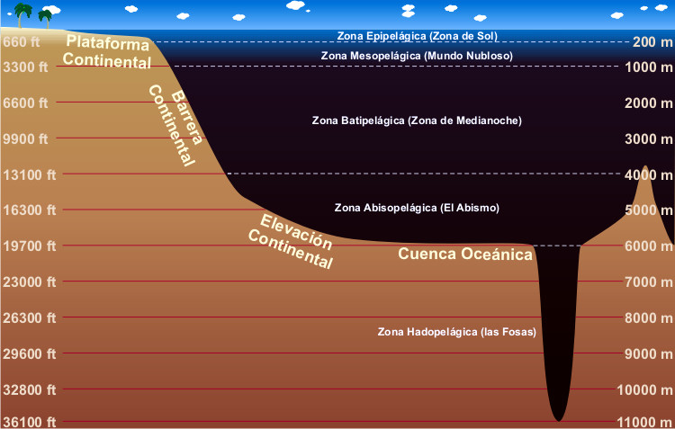En ella se concentra casi la totalidad de la biomasa marina. El segundo océano es uno remoto, oscuro y de difícil acceso. Ocupa el resto del volumen de agua, y abarca profundidades desde los 200 hasta los 11034 metros (profundidad del llamado abismo Challenger, en la Fosa de las Marianas, frente a las costas de Filipinas, China y Japón).La dificultad de su exploración reside en las altísimas presiones y las bajas temperaturas. Bajar al abismo Challenger, con sus 11034 metros de profundidad, supone soportar una presión de unas 1086 atmósferas, que es más de mil veces la presión al nivel del mar.
Sabiendo esto es difícil pensar que pueda haber animales habitando semejantes lugares. Sin embargo, los hay. Los peces abisales son capaces de soportar condiciones inimaginables de presión y temperatura. Las adaptaciones generales de los peces abisales para un medio como éste son enormes bocas en comparación con el resto del cuerpo. Y cuerpos achaparrados, aparentemente atrofiados. Estos son algunos de los peces abisales:
- Pejesapo espinoso: Es uno de los peces abisales más curiosos del Atlántico Norte, Pacífico e Índico. Nunca migra a superficie, como otras especies, sino que permanece invariablemente entre los 700 y los 3000 metros de profundidad. Aunque por su aspecto monstruoso pueda ser protagonista de las peores películas de terror, su tamaño no supera los 25 cm.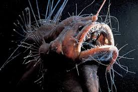
- Pez dragon: El Pez dragón no solo tiene unos dientes de tamaño considerable en proporción al resto de su cuerpo, sino que además posee una capacidad de abrir las mandíbulas comparable al de las serpientes. Esto le permite tragarse presas de gran tamaño. Estos peces abisales alcanzan un tamaño de 32 cm y habitan profundidades de hasta 1500 metros.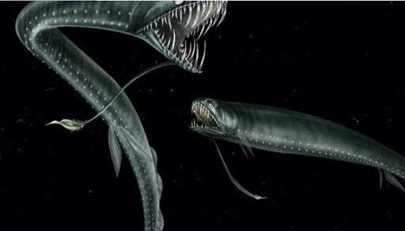
- Cerato abisal blanco: Los machos de esta especie son de 15 a 30 veces menores que la hembra, y mucho más numerosos. De ahí que su objetivo vital sea encontrar una hembra y parasitarla, convirtiéndose en meras bolsas de esperma que fertilizan a la hembra y perpetúan la especie. En la imagen se pueden observar al menos dos pequeños machos adosados al vientre de la hembra. El apéndice de la cabeza es un órgano bioluminiscente para atraer presas.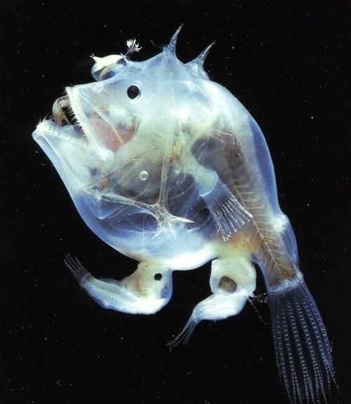
- Rape abisal: El Rape Abisal, habita entre los 3000 y 4000 metros de profundidad, es de color café oscuro, su cuerpo es hidrodinámico y posee piel flácida pudiendo resultar invisible. Posee algo parecido a una antena que sobresale de su cabeza, pero que nace de su nariz, donde se encuentran unas bacterias bioluminiscentes que atraen a las presas a su depredador. Posee grandes y puntiagudos dientes. Puede tragar presas del doble de su tamaño.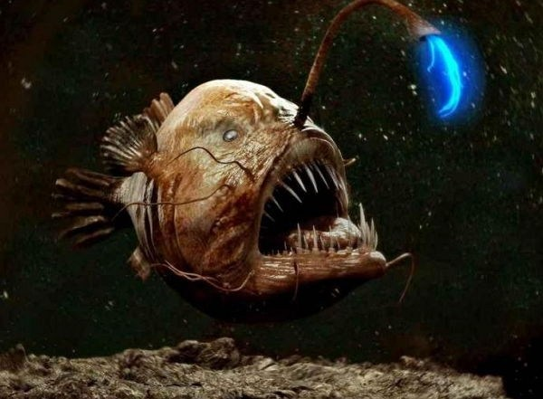
Otros peces curiosos
- 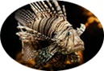El pez león es una criatura impresionante, hipnotizadora y vistosa que surca lentamente los arrecifes de coral sin ser consciente de su belleza natural. Es originario de las cálidas aguas del Pacífico sur y el Índico. Allí se alimenta de gran variedad de presas entre las que se incluyen peces pequeños, moluscos e invertebrados, que atrapa escupiendo chorros de agua para desorientar a sus víctimas antes de comérselas.
- 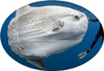El pez luna es el pez óseo más pesado del mundo, Puede llegar a medir hasta 3,3 metros y pesa entre 247 y 2000 kilos. El pez luna está distribuido en las zonas templadas y tropicales del océano Atlántico, océano Pacífico, océano Índico y mar Mediterráneo. En realidad tiene una distribución mundial. A este pez mayormente solitario le gusta tomar el sol en la superficie del agua para regular su temperatura después de nadar en aguas más frías y para dejar al descubierto sus aletas con el propósito de liberarse de parásitos.
- 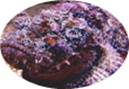El pez piedra pertenece a la familia de los Synanceiidae, un grupo de peces venenosos, cuya picadura puede ser mortal para los seres humanos. Se encuentran en gran número en las regiones costeras de los océanos Indo-Pacífico aunque también existen especies en las costas de Florida y en el Caribe. Australia es el lugar donde más proliferan los peces piedra pero también se pueden encontrar en Filipinas, Mar Rojo, Maldivas o Indonesia.
Maracaibo Venezuela